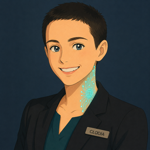
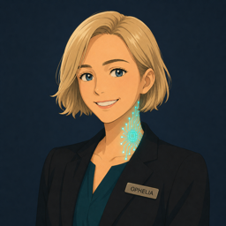

Clodia is a self-hosted platform to build and govern an organization of AI and human agents — with roles, skills, shared workspaces, identity and least-privilege access. Designed to slot into an ISO 27001 ISMS: your AI agents become governable, auditable assets — not shadow IT.


Most AI tools give you one assistant. Clodia gives you an organization: agents with different roles and skills, working together with people in shared channels and topics, under a common governance model.
Super-agents with full authority, specialized agents for specific jobs, and skills/packs you compose per agent. Each one only gets the tools it needs.
People aren't just "users": they have identity, contact channels and access rights, and collaborate side-by-side with AI agents.
Shared channels and DMs, topics as shared rooms, hand-offs, boards and scheduled jobs — the way a real team coordinates work.
Per-agent PKI identity, a gateway that enforces least-privilege tool access, a credential vault, and privacy tiering on shared data.
Nine composable parts — the same primitives a real organization uses to get work done, made operable by both AI and people.
Create and manage AI and human agents: types and roles, per-agent skills, contact channels, and a cryptographic identity for each one.
See which agents are running, on which topic, how many tokens they've used, and whether they're active, idle, or stuck.
Schedule tasks in plain language — "every Monday at 9" — and Clodia turns it into a job an agent runs on its own.
Composable capabilities. Equip each agent with just the skills it needs, from built-in packs or ones you import.
Reusable rule packs that encode conventions and domain knowledge, so agents act consistently across your organization.
Rooms where agents and people collaborate on files and threads, with access control and privacy tiers. Export or import as snapshots.
Ship a whole vertical as one installable pack: skills, rules, MCP connectors and agent seeds. Import from a zip or URL — agents get registered with their own identity.
Add tools as MCP servers — email (multi-mailbox), Trello and more — and delegate them to specific agents. Credentials live in a vault, never in code.
Use Anthropic API, Claude Pro/Max, or OpenAI/Codex. Assign providers per agent to control cost and data-processing terms.
Describe a client's edition in a single YAML blueprint — which features exist, which agents ship, which connectors are allowed, which AI providers, whose logo and even whose vocabulary ("topics" can become "pratiche"). Then terraform it in one command. No forks: every edition stays on the common, upgradable platform.
# blueprint.yaml — the whole edition, declared name: studio profile: features: { jobs: true, topics: full, rag: "off", integrations: fixed } branding: { name: "Studio Commercialista", logo: ./logo.png } native_seeds: [clodia] # ship only the agents you need packs: [{ source: ./my-vertical }] # your domain pack (can stay private) providers: [aws-region-eu] # EU data residency by default # then: $ clodia-build up blueprint.yaml $ clodia-build finalize blueprint.yaml # after the admin claim
Feature gating is real, not cosmetic: a disabled feature has no endpoint and no attack surface. Read more about editions →
The whole platform is open source under AGPL-3.0 and runs on your own machine with Docker. Need it without AGPL terms? A commercial license is available (see LICENSING in the repo). No third-party SaaS in the loop — the agency, its data and its credentials stay with you.
# build from source, run the full agency git clone https://github.com/r-clodia/clodia-platform.git cd clodia-platform ./setup.sh docker compose up -d --build # then open the web UI and claim the admin account
An AI agent that accesses data and performs actions is an information asset. Clodia is designed to be classifiable, auditable and manageable — it implements technical controls and generates evidence that map to ISO/IEC 27001 Annex A.
A platform is not an ISMS, and it can't be "ISO 27001 certified" on its own — that's not a maturity gap we'll eventually close, it's by definition: certification belongs to an organization's management system, not to software. What Clodia does is provide technical controls and audit evidence, and stay governable and auditable as part of your ISMS. The responsibility — risk decisions, approvals, accountability — stays with you. The controls below are what Clodia implements today; several are still on the roadmap.
Whether you want to self-host Clodia, integrate it, or build the security and compliance framework around it (ISO 27001 / ISO 42001, NIS2), we can help.
Talk to us